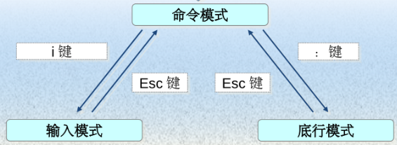
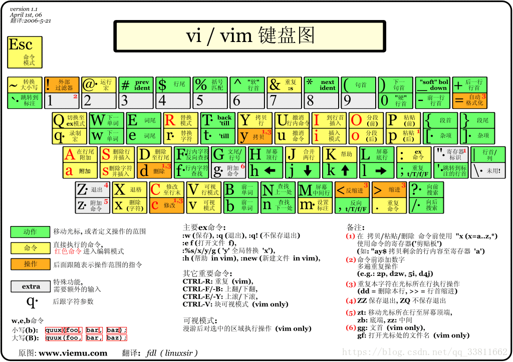

Linux课堂笔记
个人的一些Linux学习笔记
一、vi和vim编译器
介绍：vim具有程序编辑的能力，可以看做是vi的增强版本，可以主动的以字体颜色辨别语法的正确性，方便程序设计。代码补完、编译及错误跳转等方便编程的功能特别丰富，在程序员中被广泛使用。
1、vim有三种模式
分别是命令模式、输入模式、底行模式，它们之间的切换如下图所示

2、命令模式基本命令
ESC 退出插入
:w 保存
:q 退出
:q! 强制退出（不保存文件）
vi和vim快捷方式
#复制
yy(正常模式) #拷贝当前行
p(正常模式) #粘贴
*yy(正常模式) #拷贝当前行向下*行
#删除
dd(正常模式) #删除一行
*dd(正常模式) #删除当前行向下的*行
#查找
/hello + 回车(正常模式) #查找关键字hello
n(正常模式) #查找下一个
#文件的行号
:set nu(命令模式) #设置行号
:set nonu(命令模式) #取消行号
#跳转到最末行
G(正常模式)
#跳转到最首行
gg(正常模式)
#撤销
u(正常模式)
3、键盘图

二、Linux文件管理
一般命令格式：命令 [-选项] [ 参数]
1、pwd命令 (print working directory，打印查看当前工作目录)
#pwd
2、ls命令 (列出当前工作目录下的所有文件名称)
#ls 选项
选项解释：
-l：表示list，表示以详细列表的形式进行展示
-a：表示显示所有的文件/文件夹（包含了隐藏文件/文件夹）
-h：以可读性较高的形式显示文件大小
常见语法：
#ls -l
#ls -lh
3、mkdir命令 (make directory，创建目录)
#mkdir
选项解释：
-p：一次性创建多层目录
一次性创建多层目录举例：
mkdir -p f1/f2/f3/f4
4、touch命令 (创建文件)
#touch
可一次性创建多个文件，只需在后面添加文件名字即可
5、cp命令 (copy，复制)
#cp 被复制文件路径 文件被复制到的路径
6、mv命令 (move，移动，剪切)
#mv 需要移动的文档路径 需要保存的位置路径
7、rm命令 (remove，移除、删除)
#rm 选项 需要移除的文档路径
选项解释：
-f：force，强制删除，不提示是否删除
-r：表示递归
8、zip/unzip命令 (以zip格式将文件打包压缩或解压zip)
（1）压缩
#zip 压缩后的文件名 压缩前的文件名
（2）解压
#uzip 压缩文件
9、tar命令
（1）压缩
#tar -czvf 打包文件名.tar.gz 源文件或目录
#tar -cjvf 打包文件名.tar.bz2 源文件或目录
#tar -cJvf 打包文件名.tar.xz 源文件或目录
（2）解压
将上述的-c改为-x
10、wget命令(下载远程文件到Linux主机)
#wget [参数] [URL地址]
11、find命令(文件搜索)
#find [搜索范围] [匹配条件]
选项解释：
-name: 按照文件名搜索；
-iname: 按照文件名搜索，不区分文件名大小；
-inum: 按照 inode 号搜索；
-size[+-]大小：按照指定大小搜索文件
-atime [+-]时间: 按照文件访问时间搜索
-mtime [+-]时间: 按照文改时间搜索
-ctime [+-]时间: 按照文件修改时间搜索
三、Linux文件权限设置
总述：Linux系统一般将文件可存/取访问的身份分为3个类别：owner（所有者）、group（所属组）、others（其他)，且3种身份各有read（读）、write（写)、execute（执行）等权限。
1、权限介绍
什么是权限？
在多用户（可以不同时）计算机系统的管理中，权限是指某个特定的用户具有特定的系统资源使用权力，像是文件夹、特定系统指令的使用或存储量的限制。
在Linux中分别有读、写、执行权限：
读权限（r）：
对于文件夹来说，读权限影响用户是否能够列出目录结构
对于文件来说，读权限影响用户是否可以查看文件内容
写权限（w）：
对文件夹来说，写权限影响用户是否可以在文件夹下“创建/删除/复制到/移动到”文档
对于文件来说，写权限影响用户是否可以编辑文件内容
执行权限（x)：
一般都是对于文件来说，特别脚本文件。
2、身份介绍
Owner身份（文件所有者，默认为文档的创建者）
由于Linux是多用户、多任务的操作系统，因此可能常常有多人同时在某台主机上工作，但每个人均可在主机上设置文件的权限，让其成为个人的“私密文件”，即个人所有者。因为设置了适当的文件权限，除本人（文件所有者）之外的用户无法查看文件内容。
例如某个MM给你发了一封Email情书，你将情书转为文件之后存档在自己的主文件夹中。为了不让别人看到情书的内容，你就能利用所有者的身份去设置文件的适当权限，这样，即使你的情敌想偷看你的情书内容也是做不到的。
Group身份（与文件所有者同组的用户）
与文件所有者同组最有用的功能就体现在多个团队在同一台主机上开发资源的时候。例如主机上有A、B两个团体，A中有a1,a2,a3三个成员，B中有b1,b2两个成员，这两个团体要共同完成一份报告F。由于设置了适当的权限，A、B团体中的成员都能互相修改对方的数据，但是团体C的成员则不能修改F的内容，甚至连查看的权限都没有。同时，团体的成员也能设置自己的私密文件，让团队的其它成员也读取不了文件数据。在Linux中，每个账户支持多个用户组。如用户a1、b1即可属于A用户组，也能属于B用户组【主组和附加组】。
Others身份（其他人，相对于所有者）
这个是个相对概念。打个比方，大明、二明、小明一家三兄弟住在一间房，房产证上的登记者是大明（owner所有者），那么，大明一家就是一个用户组，这个组有大明、二明、小明三个成员；另外有个人叫张三，和他们三没有关系，那么这个张三就是其他人了。
同时，大明、二明、小明有各自的房间，三者虽然能自由进出各自的房间，但是小明不能让大明看到自己的情书、日记等，这就是文件所有者（用户）的意义。
Root用户（超级用户）
在Linux中，还有一个神一样存在的用户，这就是root用户，因为在所有用户中它拥有最大的权限 ，所以管理着普通用户。
未完待续。。。